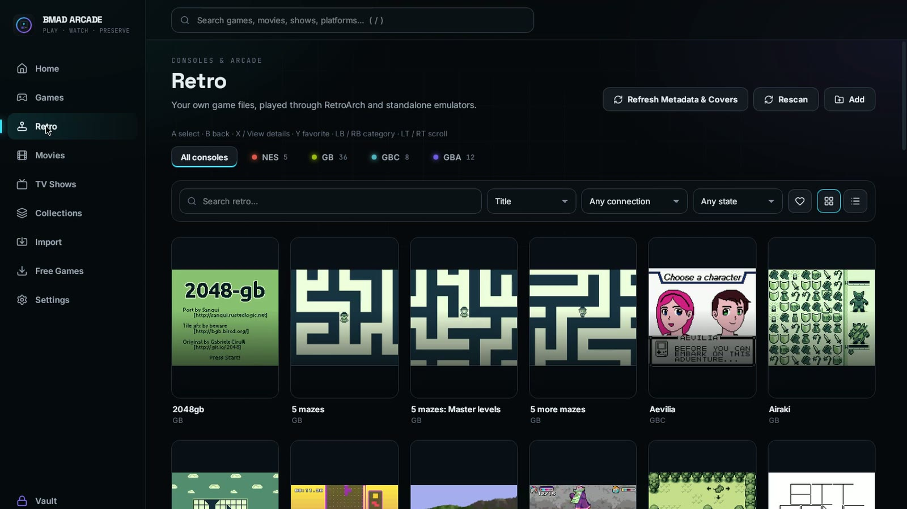
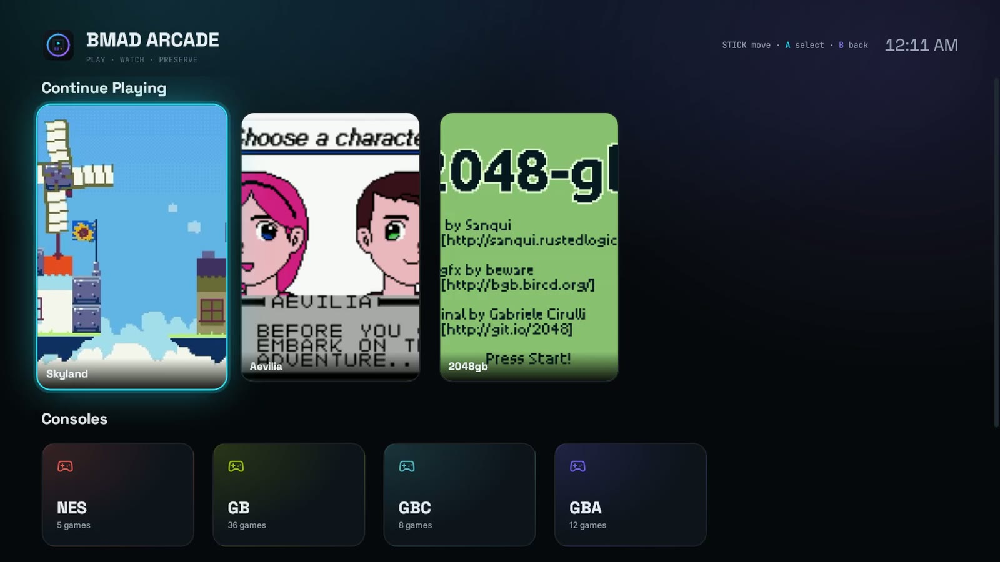
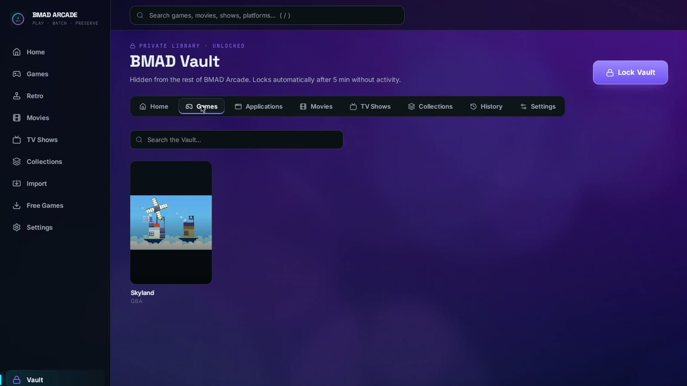
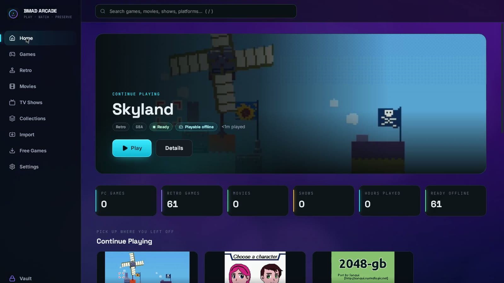

Every game you own.
One launcher that knows if it worked.
Arcade reads what your launchers already installed, shows it in one library, starts games through their own launchers and follows them until they really run.
From library to game to couch mode.
Watch Arcade launch a game through mGBA, show its launch result, and switch to the full-screen Arcade Mode.
- Choose a game already in your library.
- Press Play to open it in your installed emulator.
- Check the launch result, then browse in Arcade Mode.
Recorded on Ubuntu 22.04. Gameplay: Skyland by Evan Bowman, using the MPL-2.0 source edition. No games, ROMs or BIOS files are included in Arcade.
Try BMAD Arcade freeWhat you get
- Your library, found automatically: Steam, Epic Games through Heroic, GOG, Lutris and programs you add; DLC listed under its game; artwork from your launchers' own caches and the stores' public image servers.
- Launches you can trust: Arcade follows the game itself and tells you why when it does not start (files moved, sign-in needed, a launcher prompt waiting for you, a game closing right after it opened, a Wine crash).
- Retro consoles through the emulators you installed (RetroArch, melonDS, PPSSPP, mGBA, PCSX2, Dolphin, DuckStation and more). BMAD Arcade includes no games or ROMs.
- Arcade Mode for full-screen, controller-first browsing.
- Free and homebrew games from open-licence sources (Homebrew Hub).
- Signed update notifications and a diagnostics file you create and choose to share. No telemetry.


Early Access licence: $2.99 launch price
Everything above stays free. The licence adds two features and supports development. Launch price through December 31, 2026, then $4.99.


How buying works
- Pay once on Stripe's secure page. No account, no subscription; BMAD never sees your card.
- Your licence file arrives by email, usually within minutes. It is sent by BMAD's own computer, so if that computer is offline it can take a few hours; write to support if nothing has arrived within a day.
- In BMAD Arcade: Settings → About & updates → Add licence file. It works offline and on every Early Access build.
- Changed your mind? Full refund within 14 days, no questions asked.
Verified on real games
Real launches through Arcade's own pipeline: Bitburner, Hacknet (Steam, native); Over The Top: WWI, Raft, Bodycam, Hogwarts Legacy (Steam, Proton); Civilization VI, Grand Theft Auto V, ARK (Epic through Heroic); RetroArch (Game Boy, Game Boy Color, GBA, NES, PC Engine, PlayStation cores), melonDS, PPSSPP. Honestly reported instead of "started": Battlefield V (stops at the EA app sign-in; EA anti-cheat blocks Linux), New World (closes right after opening), The Elder Scrolls Online (starter crashes under Proton).
Honest limits
- Online-only or anti-cheat-locked games may not run on Linux.
- Physical 8BitDo button mapping is not yet verified on hardware; standard Linux gamepads (SDL) are supported.
- Linux x86_64 only.
Cross-game Fusions and Mod Lab are in development and are not distributed: they connect third-party games whose licences have not been cleared for distribution.